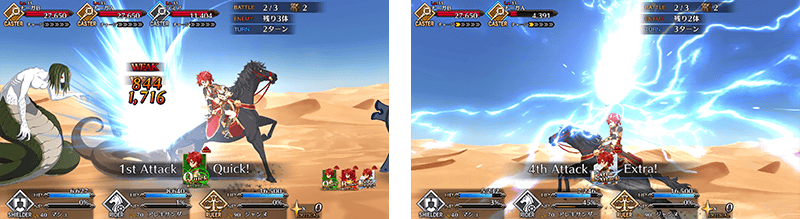
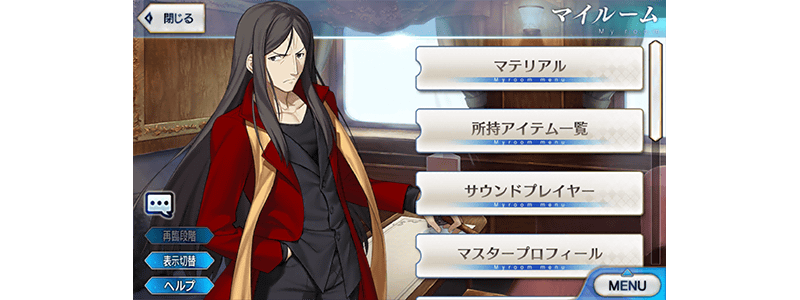

2019年4月22日(一) 17:00～5月6日(一) 11:59的期間，舉辦「艾梅洛閣下II世事件簿×Fate/Grand Order合作活動開幕前夕宣傳活動」！
還有，「艾梅洛閣下II世事件簿×Fate/Grand Order合作活動」的參加條件為通過第2部 第3章「Lostbelt No.3 － intro －」。尚未通過的御主，務必藉此機會推進主線關卡！
※本頁面皆為開發中圖片。會有與實際圖片相異的情況。
◆舉辦期間◆
2019年4月22日(一) 17:00～5月6日(一) 11:59
「艾梅洛閣下II世事件簿×Fate/Grand Order合作活動」參加條件
滿足以下條件的Master才能參加
・通過第2部 第3章「Lostbelt No.3 － intro －」
※不需要通過亞種特異點(從Ⅰ到Ⅳ)。
◆有關從者真名的注意◆
在2018年12月31日(二) 23:00以後新配信的主線故事及期間限定活動、一部份關卡、宣傳活動及召喚中，會顯示隱藏真名的對象從者真名。
※已經配信的主線故事、復刻活動、一部份關卡中不在此限。

翻新「★3(R)亞歷山大」的戰鬥動作及寶具演出！
在「Fate/Grand Order」官方網站內的公告中，以影片公開寶具演出，敬請確認。
◆翻新時間◆
2019年4月22日(一) 17:00～

為了記念「艾梅洛閣下II世事件簿×Fate/Grand Order合作活動開幕前夕宣傳活動」的舉辦，MyRoom以期間限定變更為特別樣式！
◆期間◆
2019年4月26日(五) 17:00～5月10日(五) 11:59

為了記念與艾梅洛閣下II世事件簿的合作活動舉辦，實施開幕前夕特別登入獎勵。
在下述期間中，7次登入(1天算1次)的話，贈送最多黃金果實7個！
◆舉辦期間◆
2019年4月23日(二) AM3:00～4月30日(二) AM2:59
◆贈送對象◆
2019年4月29日(一) AM2:59前通過「特異點F 炎上汙染都市 冬木」的Master對象
| 登入次數 | 贈送內容 |
|---|---|
| 第1次 | 黃金果實 1個 |
| 第2次 | 黃金果實 1個 |
| 第3次 | 黃金果實 1個 |
| 第4次 | 黃金果實 1個 |
| 第5次 | 黃金果實 1個 |
| 第6次 | 黃金果實 1個 |
| 第7次 | 黃金果實 1個 |
※登入獎勵會在每天AM3:00配發。 ※最多能領取7次，但根據成為贈送對象的時間點，可能無法到此上限。 ※上述時間前，在管理室(ターミナル)畫面的關卡橫幅必須要有「CLEAR」的文字顯示。
「艾梅洛閣下II世事件簿×Fate/Grand Order合作活動」的期間中，活動加成對象從者在活動關卡中會得到「自身的攻擊威力提升」加成。
並且一部份的從者還會得到「絆點數獲得量提升」的加成！
強化對象從者，挑戰活動吧！
※活動加成的效果量因從者而異。
※自4月22日(一) 17:00在從者選擇畫面和從者強化畫面等，追加活動加成篩選器。由於是只顯示於活動活躍從者的便利功能，敬請活用。
▶得到2種活動加成的從者
下表的從者在活動關卡中會得到「自身的攻擊威力提升」與「絆點數獲得量提升」的加成。
【活動加成的效果量與對象從者】
| 自身的 攻擊威力 |
絆點數 獲得量 |
職階 | 稀有度 | 從者名 |
|---|---|---|---|---|
| ＋100% | ＋50% | Rider | ★★★★★ | 司馬懿〔萊涅絲〕 |
| Assassin | ★★★★ | 格蕾 | ||
| Ruler | ★★★★ | 阿斯特蕾亞 | ||
| ＋50％ | ＋20% | Saber | ★★★★ | 阿爾托莉亞・潘德拉剛〔Alter〕 |
| Archer | ★★★★★ | 新宿的Archer (詹姆斯・莫里亞蒂) | ||
| Rider | ★★★★★ | 伊斯坎達爾 | ||
| ★★★ | 亞歷山大 | |||
| Caster | ★★★★★ | 諸葛孔明〔艾梅洛Ⅱ世〕 | ||
| ★★★★★ | 李奧納多・達文西 | |||
| ★★★ | 查爾斯・巴貝奇 | |||
| Assassin | ★★★★ | Emiya〔Assassin〕 |
※4月27日(六) 20:00修正 ※就算成為對象從者，也會有不在本活動主線劇本登場的情況。
▶其他的從者
下表的從者在活動關卡中會得到「自身的攻擊威力提升」的加成。
【活動加成的效果量與對象從者】
| 自身的 攻擊威力 |
職階 | 稀有度 | 從者名 |
|---|---|---|---|
| ＋30％ | Lancer | ★★★★ | 阿爾托莉亞・潘德拉剛〔Alter〕 |
| Caster | ★★★★ | 童謠 | |
| ★★ | 威廉・莎士比亞 | ||
| Assassin | ★★★★★ | 開膛手傑克 | |
| Berserker | ★★★★★ | 坂田金時 | |
| ★ | 靠漫畫了解Berserker (保羅・班揚) | ||
| Avenger | ★★★ | 安東尼奧・薩里耶利 |
※4月27日(六) 20:00修正
※就算成為對象從者，也會有不在本活動主線劇本登場的情況。
下述的期間中，在進行對象從者的強化時，大成功(經驗值2倍加成)・極大成功(經驗值3倍加成)的發生率以期間限定變成2倍！
請務必藉此機會強化對象從者！
◆舉辦期間◆
2019年4月22日(一) 17:00～5月6日(一) 11:59
◆對象從者◆
| 職階 | 稀有度 | 從者名 |
|---|---|---|
| Saber | ★★★★ | 阿爾托莉亞・潘德拉剛〔Alter〕 |
| Archer | ★★★★★ | 新宿的Archer(詹姆斯・莫里亞蒂) |
| Lancer | ★★★★ | 阿爾托莉亞・潘德拉剛〔Alter〕 |
| Rider | ★★★★★ | 伊斯坎達爾 |
| ★★★★★ | 司馬懿〔萊涅絲〕 | |
| ★★★ | 亞歷山大 | |
| Caster | ★★★★★ | 諸葛孔明〔艾梅洛Ⅱ世〕 |
| ★★★★★ | 李奧納多・達文西 | |
| ★★★★ | 童謠 | |
| ★★★ | 查爾斯・巴貝奇 | |
| ★★ | 威廉・莎士比亞 | |
| Assassin | ★★★★★ | 開膛手傑克 |
| ★★★★ | Emiya〔Assassin〕 | |
| ★★★★ | 格蕾 | |
| Berserker | ★★★★★ | 坂田金時 |
| ★ | 靠漫畫了解Berserker(保羅・班揚) | |
| Ruler | ★★★★ | 阿斯特蕾亞 |
| Avenger | ★★★ | 安東尼奧・薩里耶利 |
※4月27日(六) 20:00修正

下述的期間中，在關卡開始時的支援選擇畫面，選擇其他御主的對象從者做支援情況、其他御主選擇自己的對象從者做支援情況的友情點數獲得量變成2倍。
將好友和跟隨的御主等做為支援能選擇從者和概念禮裝的編成列入考量，藉此機會入手更多友情點數吧！
◆舉辦期間◆
2019年4月22日(一) 17:00～5月6日(一) 11:59
◆對象從者◆
| 職階 | 稀有度 | 從者名 |
|---|---|---|
| Saber | ★★★★ | 阿爾托莉亞・潘德拉剛〔Alter〕 |
| Archer | ★★★★★ | 新宿的Archer(詹姆斯・莫里亞蒂) |
| Lancer | ★★★★ | 阿爾托莉亞・潘德拉剛〔Alter〕 |
| Rider | ★★★★★ | 伊斯坎達爾 |
| ★★★★★ | 司馬懿〔萊涅絲〕 | |
| ★★★ | 亞歷山大 | |
| Caster | ★★★★★ | 諸葛孔明〔艾梅洛Ⅱ世〕 |
| ★★★★★ | 李奧納多・達文西 | |
| ★★★★ | 童謠 | |
| ★★★ | 查爾斯・巴貝奇 | |
| ★★ | 威廉・莎士比亞 | |
| Assassin | ★★★★★ | 開膛手傑克 |
| ★★★★ | Emiya〔Assassin〕 | |
| ★★★★ | 格蕾 | |
| Berserker | ★★★★★ | 坂田金時 |
| ★ | 靠漫畫了解Berserker(保羅・班揚) | |
| Ruler | ★★★★ | 阿斯特蕾亞 |
| Avenger | ★★★ | 安東尼奧・薩里耶利 |
※4月27日(六) 20:00修正
※請注意NPC從者即使是對象從者也在友情點數獲得量2倍的對象外。
下述的期間中，開放全種類在迦勒底之門內每日出現的關卡「種火集め」與「修練場」。
◆舉辦期間◆
2019年4月22日(一) 17:00～4月29日(一) 22:59
◆對象關卡◆
【種火集め】
初級、中級、上級、超級
【修練場】
初級、中級、上級、超級
| 時間 | 種火集め | 修練場 |
|---|---|---|
| 4月22日(一) 17:00～ 4月29日(一) 22:59 |
･【コラボイベント開幕直前】 月曜 種火集め<槍･殺編> |
･【コラボイベント開幕直前】 月曜 弓の修練場 |
| ･【コラボイベント開幕直前】 火曜 種火集め<剣･騎編> |
･【コラボイベント開幕直前】 火曜 槍の修練場 | |
| ･【コラボイベント開幕直前】 水曜 種火集め<弓･術編> |
･【コラボイベント開幕直前】 水曜 狂の修練場 | |
| ･【コラボイベント開幕直前】 木曜 種火集め<槍･殺編> |
･【コラボイベント開幕直前】 木曜 騎の修練場 | |
| ･【コラボイベント開幕直前】 金曜 種火集め<剣･騎編> |
･【コラボイベント開幕直前】 金曜 術の修練場 | |
| ･【コラボイベント開幕直前】 土曜 種火集め<弓･術編> |
･【コラボイベント開幕直前】 土曜 殺の修練場 | |
| ･【コラボイベント開幕直前】 日曜 種火集め<ランダム編> |
･【コラボイベント開幕直前】 日曜 剣の修練場 |
※關卡通過報酬的魔力稜鏡只限初次通過時才可獲得。 ※請注意以期間限定出現的「種火集め」及「修練場」與平常每日出現的「種火集め」及「修練場」的關卡有所差異，不會繼承「關卡情報」。 ※舉辦期間中，關卡通過報酬不會重置。
【種火集め 關卡的難易度等】
| 難易度 | 推薦Lv | 消耗AP | 初次通過報酬 |
|---|---|---|---|
| 初級 | 5 | 10 | 魔力稜鏡 1個 |
| 中級 | 10 | 20 | 魔力稜鏡 2個 |
| 上級 | 25 | 30 | 魔力稜鏡 3個 |
| 超級 | 40 | 40 | 魔力稜鏡 4個 |
【修練場 關卡的難易度等】
| 難易度 | 推薦Lv | 消耗AP | 初次通過報酬 |
|---|---|---|---|
| 初級 | 10 | 10 | 魔力稜鏡 1個 |
| 中級 | 25 | 20 | 魔力稜鏡 2個 |
| 上級 | 40 | 30 | 魔力稜鏡 3個 |
| 超級 | 60 | 40 | 魔力稜鏡 4個 |
主線關卡第1部「第四特異點 死界魔霧都市 倫敦」自由關卡初次通過前的AP消耗量以期間限定變成1/2！
於主線關卡第1部 第四特異點還留有尚未通過自由關卡的御主，請務必藉此機會通過吧！
◆舉辦期間◆
2019年4月22日(一) 17:00～4月29日(一) 11:59
◆對象關卡◆
主線關卡第1部「第四特異點 死界魔霧都市 倫敦」的自由關卡
※初次通過只指到入手初次通過報酬的時間點為止。
※就算在戰鬥中撤退的情況，關卡通過前AP的消耗仍是1/2。
其他還有，期間限定「艾梅洛閣下II世事件簿合作活動開幕前夕Pick Up召喚」同時舉辦！
關於詳情，請自下述橫幅確認。